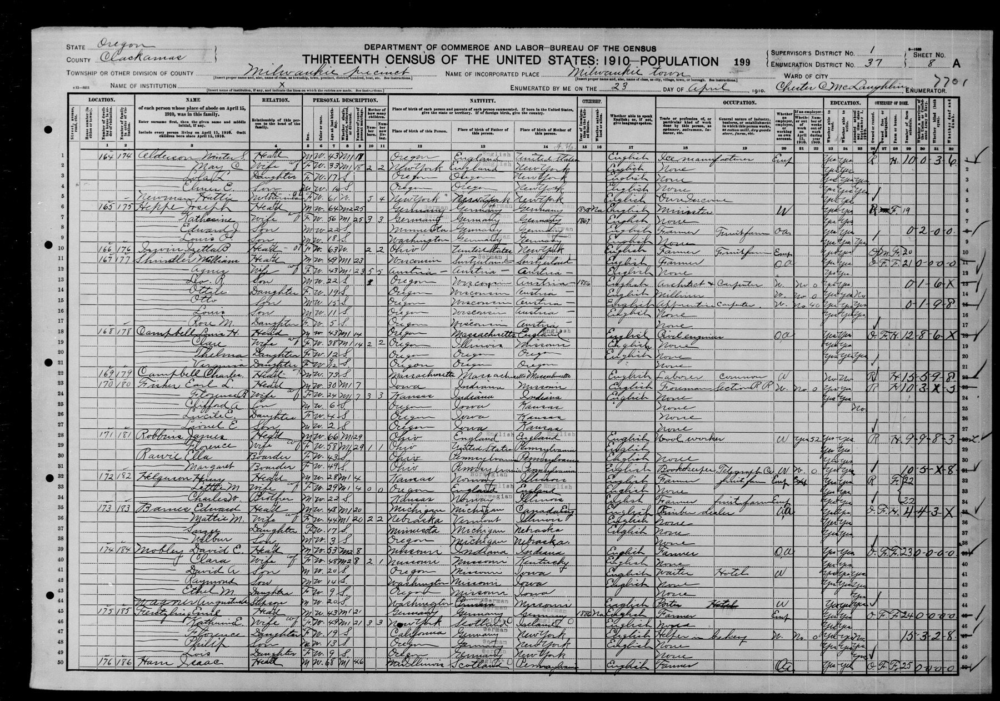
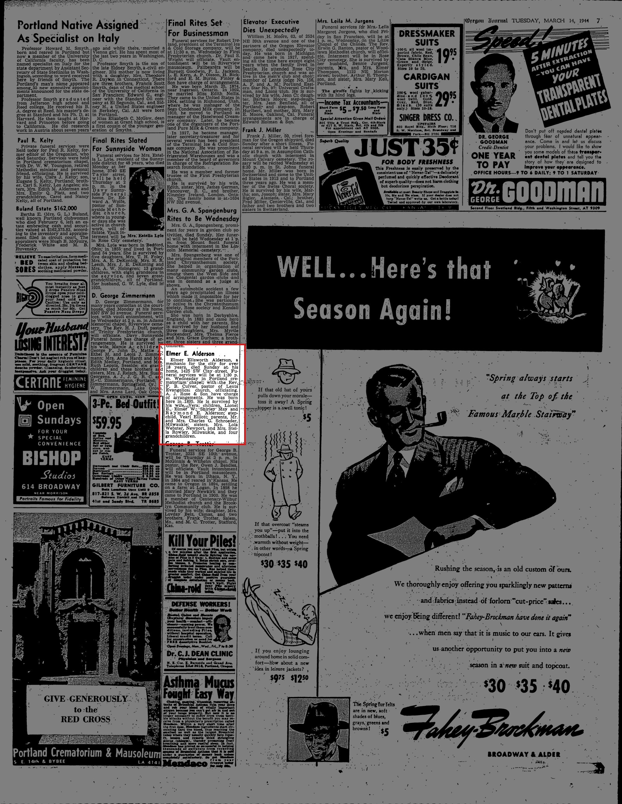
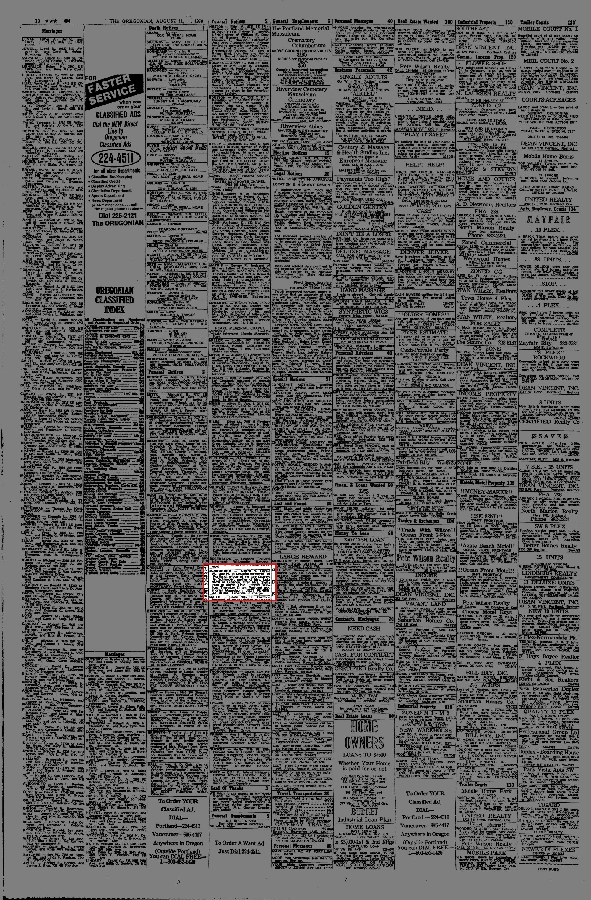
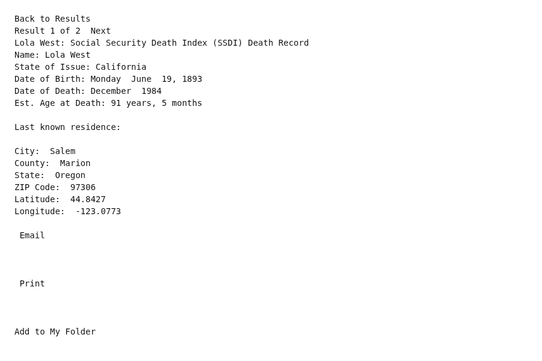

Lola Lucille Alderson 1893–1984
Peter's great-aunt by adoption.
Also recorded as Lola Helgerson; Lola Webster.
Lola Lucille Alderson was born on 19 Jun 1893 in Umatilla County, Oregon, United States1, the daughter of Winter Scott Alderson and Carrie May Newman12. She married Charles W. Helgerson on 8 Jan 1911 in Vancouver, Clark County, Washington, United States13. She died in Dec 1984 in Oregon, United States11.
Family
- Parents
- Winter Scott Alderson 1866–1933 and Carrie May Newman 1878–1970 documented
- Husband
- Charles W. Helgerson b. 1888 · married on 8 Jan 1911 in Vancouver, Clark County, Washington, United States13
- Children
- Ronald C. Helgerson b. 1922 documented
Life events
| Event | Date | Place and details |
|---|---|---|
| Born | 19 Jun 1893 | Umatilla County, Oregon, United States1 |
| Lived | 22 Oct 1895 | Portland, Multnomah County, Oregon, United States2 |
| Lived | 23 Apr 1910 | Milwaukie, Clackamas County, Oregon, United States3 |
| Married | 8 Jan 1911 | with Charles W. Helgerson Vancouver, Clark County, Washington, United States13 |
| Lived | 14 Jan 1914 | Tacoma, Pierce County, Washington, United States1 |
| Lived | 1922 | Washington, United States4 |
| Lived | 1928 | Portland, Multnomah County, Oregon, United States5 |
| Lived | Apr 1930 | Los Angeles, California, United States6 |
| Lived | bet 1935 and 1940 | Portland, Multnomah County, Oregon, United States7 |
| Married | 30 Jun 1941 | Washington, United States10 |
| Lived | 12 Mar 1944 | Oregon, United States8 |
| Lived | 9 Aug 1970 | Oregon, United States9 |
| Died | Dec 1984 | Oregon, United States11 |
Records




Sources
- S-fs-HVQR-M86Z.
Adoptive older sister of Estella, b. 19 Jun 1893, Umatilla, Oregon. Married to C. W. (Charles W.) Helgerson by 1914; an infant Helgerson was born and died in Tacoma on 14 Jan 1914, parents Lola Alderson and C. W. Helgerson. A son was born in 1922 in Washington. She remarried Anson A. Webster on 30 Jun 1941.
- Birth and death records of Elmer Elsworth Alderson (b. 22 Oct 1895 Portland, OR).
Elmer Elsworth Alderson (ZNLQ-YFPZ): Birth 1895 @ Portland, Oregon; Death 12 Mar 1944 @ Portland, Washington, Oregon, United States; ParentChild: Winter Scott Alderson, Carrie May Newman Newman … Alderson (84KN-27MM): Birth 22 Oct 1895 @ Oregon, United States; ParentChild: Scott Alderson, Alderson
Inferred to have lived at age 2 with her parents Winter Scott Alderson and Carrie May Newman in Portland, Multnomah County, Oregon when her younger brother Elmer Elsworth Alderson was born there on 22 October 1895.
- S-fs-MLY2-9PZ.
Alderson, Minter S. 43 | May C. 33 | Lola L., Daughter, 17, S, Oregon | Elmer E., Son, 14 | Newman, Hattie, Mother-in-law, 61
1910 US census, Milwaukie, Clackamas County, Oregon, sheet 8A, line 3: Lola L. Alderson, daughter, age 17, single, born Oregon, in the household of her parents Winter S. Alderson (43) and May C. Alderson (33), next door to her future husband Charles W. Helgerson.
- 1930 and 1940 US Census entries for Ronald C. Helgerson (b. 1922 Washington).
Ronald C Helgerson | United States, Census, 1930 | Birth: 1922 Washington | 1:1:XCVY-4NC | w/ Lola G Helgerson, Charles Helgerson
Lived in Washington in 1922 when her son Ronald C. Helgerson was born there (per the 1930 and 1940 US censuses).
- Voter registration of Lola Helgerson, 1928, Multnomah County, Oregon.
Lola Helgerson | Oregon, Multnomah County, Voting Registration Records, 1908-1958 | VoterRegistration: 1928 | 1:1:W94Y-763Z
Registered to vote as Lola Helgerson in Multnomah County (Portland), Oregon in 1928.
- Household of Charles Helgerson, Los Angeles, California, 1930.
Lola G Helgerson | United States, Census, 1930 | Birth: 1894 Oregon; Census: 1930 Los Angeles (Districts 0251-0500), Los Angeles, California, United States; MaritalStatus: =Married | 1:1:XCVY-4NH | w/ Charles Helgerson, Ronald C Helgerson
1930 US census, Los Angeles (Districts 0251–0500), Los Angeles County, California: Lola G. Helgerson, age 36, born Oregon, married, with husband Charles Helgerson (42, b. Kansas) and son Ronald C. Helgerson (8, b. Washington).
- Household of Charles Helgerson, Tract 52, Portland, Multnomah, Oregon, 1940.
Lolla Helgerson | United States, Census, 1940 | Birth: 1893 Oregon; Residence: 1935 Same Place; Census: 1940 Tract 52, Portland, Portland City Election Precinct 36, Multnomah, Oregon, United States | 1:1:VRTV-T2T | w/ Charles Helgerson, Ronald Helgerson
Registered to vote in Multnomah County, Oregon in 1935 and enumerated in the 1940 US census in Tract 52, Portland City Election Precinct 36, Multnomah County, Oregon (with 1935 residence at Same Place) with husband Charles Helgerson (52) and son Ronald Helgerson (18).
- Obituary: Elmer E. Alderson, Oregon Journal (Portland, Oregon), 14 March 1944, p. 7.
parents, Mr. and Mrs. Charles G. Schroeder, •Milwaukie; sisters, Mrs. Lola Webster, Newport, and Mrs. Stella Rowley, Milwaukie, and four grandchildren.
Translation: parents, Mr. and Mrs. Charles G. Schroeder, Milwaukie; sisters, Mrs. Lola Webster, Newport, and Mrs. Stella Rowley, Milwaukie, and four grandchildren.
Residing at Newport, Lincoln County, Oregon, as 'Mrs. Lola Webster' at the death of her brother Elmer Ellsworth Alderson on 12 March 1944 (having previously resided in Portland as 'Lola L. Helgerson' at her father Winter Scott Alderson's death on 27 February 1933).
- Death Notice: Schroeder — Carrie M., The Oregonian (Portland, Oregon), 11 August 1970, p. 34; and Oregon Journal, 11 August 1970, p. 24.
SCHROEDER — August 9, Carrie M-, age 92, In Lebanon formerly of Portland, widow of the late Charles G. Schroeder; mother of Mrs. Lola West of Lebanon, Ore; Mrs. Stella Hall of Akron, Ohio.
Translation: SCHROEDER — August 9, Carrie M., age 92, in Lebanon formerly of Portland, widow of the late Charles G. Schroeder; mother of Mrs. Lola West of Lebanon, Ore.; Mrs. Stella Hall of Akron, Ohio.
Residing in Lebanon, Linn County, Oregon, under her married name 'Mrs. Lola West of Lebanon, Ore.' at the death of her mother Carrie M. Schroeder in Lebanon on 9 August 1970.
- Marriage of Anson A Webster and Lola L Helgerson, 30 Jun 1941, Clark, Washington.
Anson A Webster (Age=51) & Lola L Helgerson (Age=48, father W S Alderson, mother Mae Newman): Marriage 30 June 1941 @ Clark, Washington, United States
Married second husband Anson A. Webster (age 51, born c. 1890, son of Anson A. Webster and Julia Saunier) on 30 June 1941 in Clark County, Washington.
- Lola West: Social Security Death Index (SSDI) Death Record.
Name: Lola West State of Issue: California Date of Birth: Monday June 19, 1893 Date of Death: December 1984 Est. Age at Death: 91 years, 5 months Last known residence: City: Salem County: Marion State: Oregon ZIP Code: 97306
Social Security Death Index record: Lola West, born 19 June 1893, died December 1984 (age 91 years, 5 months); SSN issued in California; last known residence Salem, Marion County, Oregon 97306.
- S-fs-MLY2-9PZ.
Alderson, Winter S. | Head | M W 43 M1 18 ... May C. | Wife | F W 33 M1 18 | 2 | 2 | New York
1910 census, ED 37, sheet 8A, lines 1–5. Winter S. (43) and May C. (33), married 18 years; she is 'mother of 2 children, 2 living'. The children are Lola L. (17, b. Oregon) and Elmer E. (14, b. Oregon), and Hattie Newman, mother-in-law, 61, lives with them. The same sheet lists a Barnes family (Edward, 48, b. Michigan; Mattie M., b. Nebraska), which is not linked to Irene.
- Entry for C W Helgerson and L L Alderson, 8 Jan 1911, Multnomah, Oregon, DigitalFilmNbr 103140220.
"personId" : "QPQN-F8DG", "name" : "L L Alderson", "role" : "Bride" … "event" : { "type" : "Marriage", "date" : "8 January 1911", "place" : "Multnomah, Oregon, United States" } … "spouses" : [ { "name" : "C W Helgerson", "role" : "Groom" } ]
Married Lola L. Alderson (age 18, of Oregon) on 8 January 1911 in Vancouver, Clark County, Washington (groom's residence recorded as Oregon).